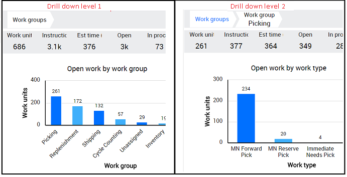

The Breadcrumb will typically appear horizontally near the top of a Monitor page, providing links back to each previous page that the user navigates through.

There are 2 drill down level screens in the above diagram.
Drill down level 1 (Work group) - This is the default page.
Drill down level 2 (Work type) - This will be displayed when any column on the first drill down level is clicked.
Breadcrumb Work groups will be displayed in 1st drill down level.
Breadcrumb Work group: <clicked column chart name> will be displayed in 2nd drill down level. (in the diagram it is 'Work group: Picking').
Number of Breadcrumbs that get displayed depends on the number of drill down levels, hence that many Screen Control Attributes will have to be added in the metadata script.
These 2 Breadcrumbs (i.e. Work groups, Work group :<picking>) can be created by adding 2 Screen Control Attributes to the breadcrumb Screen Control. The below is the sample script to add this.
| Example Breadcrumb script |
Copy Code
|
------------------Control Start----------------------------
exec DBC_ISCREENCONTROL
@active = 'Y' ,
@controlCssClass = '',
@controlName = 'breadCrumbWorkMonitor',
@controlType = '310',
@dataSource = null ,
@dataSourceType = null ,
@defaultAction = null ,
@defaultState = null ,
@divCssClass = '',
@labelOrientation = null ,
@resourceKey = null ,
@screenGroupId = @screenGroupId,
@sequence = '250'
set @screenControlId = @@IDENTITY
------------------Attribute Start----------------------------
exec DBC_ISCREENCONTROLATTRIBUTES
@active = 'Y' ,
@attributeName = 'breadcrumb',
@attributeValue = 'WORKGROUPS',
@isControlProperty = 'Y' ,
@processStamp = 'dbChangeWork_Monitor.SQL',
@screenControlId = @screenControlId
set @screenControlAttributesId = @@IDENTITY;
------------------Attribute End----------------------------
------------------Attribute Start----------------------------
exec DBC_ISCREENCONTROLATTRIBUTES
@active = 'Y' ,
@attributeName = 'breadcrumb',
@attributeValue = 'WORKGROUP',
@isControlProperty = 'Y' ,
@processStamp = 'dbChangeWork_Monitor.SQL',
@screenControlId = @screenControlId
set @screenControlAttributesId = @@IDENTITY;
------------------Attribute End----------------------------
------------------Control End-------------------------------
|
Below are the steps to create the breadcrumb.
Step 1: Create a Menu bar to house the Breadcrumb panel
Add a SCREEN_GROUP record as follows in order to create a Menu bar to hold the Breadcrumb panel. Insight Architect can also be used for this (How to: Use Insight Architect to Customize a Metadata Page).
| Field |
Value |
| SCREEN_PART_ID |
The Screen Part Id of the Monitor Menu Pane |
| GROUP_NAME |
The name of the group |
| RESOURCE_KEY |
NULL |
| GROUP_TYPE |
70 (Menu) |
| PARENT_GROUP_ID |
NULL |
| NESTED_GROUP_UNIT |
0 |
| DIV_CSS_CLASS |
nav nav-pills |
| ROW_CSS_CLASS |
row rowmenupanel |
Step 2: Create a panel screen group to house the Breadcrumb
Add a SCREEN_GROUP record as follows in order to create a panel to hold the Breadcrumb. Insight Architect can also be used for this (How to: Use Insight Architect to Customize a Metadata Page).
| Field |
Value |
| SCREEN_PART_ID |
The Screen Part Id of the Monitor Menu Pane |
| GROUP_NAME |
The name of the group |
| RESOURCE_KEY |
NULL |
| GROUP_TYPE |
60 (Panel) |
| PARENT_GROUP_ID |
Set the object id of the parent group created in step 1 |
| NESTED_GROUP_UNIT |
Set the top level object id of this group (used in nested groups) created in step 1 |
| DIV_CSS_CLASS |
col-9 col-sm-9 col-md-9 col-lg-10 |
| ROW_CSS_CLASS |
NULL |
Step 3: Create a Screen Control for the Breadcrumb
Now add a SCREEN_CONTROL record as follows for the Breadcrumb. Insight Architect can also be used for this (How to: Use Insight Architect to Customize a Metadata Page).
| Field |
Value |
| SCREEN_GROUP_ID |
The Screen Group Id of the panel that will hold the Breadcrumb |
| CONTROL_NAME |
The name of this Breadcrumb control |
| RESOURCE_KEY |
NULL |
| CONTROL_TYPE |
310 (Breadcrumb) |
| DATA_SOURCE_TYPE |
NULL |
| DATA_SOURCE |
NULL |
| DIV_CSS_CLASS |
NULL |
| CONTROL_CSS_CLASS |
NULL |
Step 4: Create Screen Control Attributes for the Breadcrumb
The breadcrumb will have a screen control attribute record for each level that the user can drill down on the chart as seen below.
Add a SCREEN_CONTROL_ATTRIBUTES as follows for the Breadcrumb. Insight Architect can also be used for this (How to: Use Insight Architect to Customize a Metadata Page).
| Field |
Value |
| ATTRIBUTE_NAME |
breadcrumb |
| ATTRIBUTE_VALUE |
The resource key for the Breadcrumb navigation name |
| SCREEN_CONTROL_ID |
The Screen Control Id of the Breadcrumb |
| IS_CONTROL_PROPERTY |
N |
See Also